Overview
Alpha diversity quantifies the within-sample variety of reactive peptides. In PhIP-seq, each sample’s enrichment profile can be characterised by how many unique peptide species are enriched (richness), how evenly that enrichment is distributed (evenness), or how dominated it is by a single peptide (dominance). These properties change across disease conditions, timepoints, and patient subgroups, making alpha diversity a useful summary statistic for exploratory analysis and hypothesis testing.
This vignette walks through the complete alpha diversity workflow in phiper:
- Computing diversity metrics with
compute_alpha() - Visualising distributions with
plot_alpha()andplot_alpha_interactive() - Testing group differences with
compute_alpha_significance() - Summarising statistical results with
plot_alpha_significance()
Setup
Load the bundled example dataset. It contains two patient groups
(A, B) measured at two timepoints
(T1, T2).
pd <- load_example_data()
#> [09:25:54] INFO Constructing <phip_data> object
#> -> create_data()
#> [09:25:54] INFO Fetching peptide metadata library via get_peptide_library()
#> [09:25:54] INFO Retrieving peptide metadata into DuckDB cache
#> -> get_peptide_library(force_refresh = FALSE)
#> [09:25:54] INFO Opened DuckDB connection
#> - cache dir:
#> /home/runner/.cache/R/phiperio/peptide_meta/phip_cache.duckdb
#> - table: peptide_meta
#> [09:25:54] OK Using cached download (SHA-256 match)
#> [09:25:57] OK Download complete and loaded into R
#> [09:26:02] INFO Importing sanitized metadata into DuckDB cache...
#> [09:26:04] OK peptide_meta table created in DuckDB cache
#> [09:26:04] OK Retrieving peptide metadata into DuckDB cache - done
#> -> elapsed: 9.999s
#> [09:26:04] OK Peptide metadata acquired
#> [09:26:04] INFO Validating <phip_data>
#> -> validate_phip_data()
#> [09:26:04] INFO Checking structural requirements (shape & mandatory columns)
#> [09:26:04] INFO Checking outcome family availability (exist / fold_change /
#> raw_counts)
#> [09:26:04] INFO Checking collisions with reserved names
#> - subject_id, sample_id, timepoint, peptide_id, exist,
#> fold_change, counts_input, counts_hit
#> [09:26:04] INFO Ensuring all columns are atomic (no list-cols)
#> [09:26:04] INFO Checking key uniqueness
#> [09:26:04] INFO Validating value ranges & types for outcomes
#> [09:26:04] INFO Assessing sparsity (NA/zero prevalence vs threshold)
#> - warn threshold: 50%
#> [09:26:04] INFO Checking peptide_id coverage against peptide_library
#> [09:26:04] INFO Checking full grid completeness (peptide * sample)
#> [09:26:04] OK Validating <phip_data> - done
#> -> elapsed: 0.72s
#> [09:26:04] OK Constructing <phip_data> object - done
#> -> elapsed: 10.722s
pd
#> ── <phip_data> ─────────────────────────────────────────────────────────────────
#>
#> counts (first 5 rows):
#> # A tibble: 5 × 9
#> sample_id subject_id group timepoint peptide_id exist counts_control
#> <chr> <chr> <chr> <chr> <chr> <int> <int>
#> 1 A_T1_1 1 A T1 10003 1 5
#> 2 A_T1_1 1 A T1 10017 1 37
#> 3 A_T1_1 1 A T1 10023 1 11
#> 4 A_T1_1 1 A T1 10062 1 0
#> 5 B_T1_1 1 B T1 10087 1 1
#> # ℹ 2 more variables: counts_hits <int>, fold_change <dbl>
#>
#> table size: 78,200 rows x 9 columns
#>
#> peptide library preview (first 5 rows):
#> # A tibble: 5 × 8
#> peptide_id Fullname species genus family order class common
#> <chr> <chr> <chr> <chr> <chr> <chr> <chr> <chr>
#> 1 agilent_1 Chromodomain-helicase-DNA-… Homo s… Homo Homin… Prim… Mamm… Human
#> 2 agilent_2 integral membrane protein Mycoba… Myco… Mycob… Myco… Acti… NA
#> 3 agilent_3 hypothetical protein (6/16… Mycoba… Myco… Mycob… Myco… Acti… NA
#> 4 agilent_4 envelope protein (5/8) & a… Orthof… Orth… Flavi… Amar… Flas… JEV
#> 5 agilent_5 Myosin-7 & beta-myosin hea… Homo s… Homo Homin… Prim… Mamm… Human
#> ... plus 36 more columns
#>
#> library size: 357,190 rows x 44 columns
#>
#> meta flags:
#> con: <duckdb_connection>
#> longitudinal: TRUE
#> exist: TRUE
#> fold_change: TRUE
#> raw_counts: FALSE
#> extra_cols: group, counts_control, counts_hits
#> peptide_con: <duckdb_connection>
#> materialise_table: TRUE
#> finalizer_env: <environment>
#> full_cross: FALSEComputing alpha diversity
Basic usage: peptide-level diversity by group
The workhorse function is compute_alpha(). At minimum,
supply your <phip_data> object, the grouping
column(s), and the rank(s) at which diversity should be computed.
alpha_group <- compute_alpha(
pd,
group_cols = "group",
ranks = "peptide_id"
)
#> [09:26:05] INFO Computing alpha diversity (<phip_data>)
#> -> group_cols: 'group'; ranks: 'peptide_id'
#> [09:26:05] OK Computing alpha diversity (<phip_data>) - done
#> -> elapsed: 0.26sThe result is a named list with S3 class
"phip_alpha_diversity". Each element is one data frame —
one per group_col plus, optionally, an interaction
element.
class(alpha_group)
#> [1] "phip_alpha_diversity" "list"
names(alpha_group)
#> [1] "group"
head(alpha_group$group)
#> # A tibble: 6 × 8
#> rank sample_id group richness shannon_diversity simpson_diversity
#> <chr> <chr> <chr> <dbl> <dbl> <dbl>
#> 1 peptide_id A_T1_10 A 210 5.35 0.995
#> 2 peptide_id A_T1_14 A 209 5.34 0.995
#> 3 peptide_id A_T2_16 A 304 5.72 0.997
#> 4 peptide_id A_T1_18 A 191 5.25 0.995
#> 5 peptide_id A_T2_18 A 309 5.73 0.997
#> 6 peptide_id B_T2_19 B 279 5.63 0.996
#> # ℹ 2 more variables: pielou_evenness <dbl>, berger_parker_dominance <dbl>What’s in the output?
Each row is one (sample, rank) pair. The five diversity
columns are:
| Column | Metric | Notes |
|---|---|---|
richness |
Number of enriched peptides | Integer; 0 for empty samples |
shannon_diversity |
Shannon entropy H | Base configurable; NA impossible |
simpson_diversity |
Simpson index (1 − Σp²) | Range [0, 1) |
pielou_evenness |
Pielou’s J = H / ln(S) |
NA when richness ≤ 1 |
berger_parker_dominance |
max(p) |
NA when richness = 0 |
names(alpha_group$group)
#> [1] "rank" "sample_id"
#> [3] "group" "richness"
#> [5] "shannon_diversity" "simpson_diversity"
#> [7] "pielou_evenness" "berger_parker_dominance"Multiple grouping columns
Pass a character vector to group_cols to get one result
per group variable.
alpha_both <- compute_alpha(
pd,
group_cols = c("group", "timepoint"),
ranks = "peptide_id"
)
#> [09:26:05] INFO Computing alpha diversity (<phip_data>)
#> -> group_cols: 'group', 'timepoint'; ranks: 'peptide_id'
#> [09:26:06] OK Computing alpha diversity (<phip_data>) - done
#> -> elapsed: 0.446s
names(alpha_both)
#> [1] "group" "timepoint"Multiple ranks
Ranks are columns in the peptide library — for example
peptide_id for peptide-level diversity, or
family / genus for taxonomic-level
diversity.
alpha_tax <- compute_alpha(
pd,
group_cols = "group",
ranks = c("peptide_id", "family", "genus")
)
#> [09:26:06] INFO Computing alpha diversity (<phip_data>)
#> -> group_cols: 'group'; ranks: 'peptide_id', 'family', 'genus'
#> [09:26:06] OK Computing alpha diversity (<phip_data>) - done
#> -> elapsed: 0.573s
# Each element now has rows for all three ranks
dplyr::count(alpha_tax$group, rank)
#> # A tibble: 3 × 2
#> rank n
#> <chr> <int>
#> 1 family 80
#> 2 genus 80
#> 3 peptide_id 80Group interactions
Set group_interaction = TRUE to also compute diversity
on the combined group × timepoint label. Set
interaction_only = TRUE to skip per-variable tables and
return only the interaction.
alpha_inter <- compute_alpha(
pd,
group_cols = c("group", "timepoint"),
ranks = "peptide_id",
group_interaction = TRUE
)
#> [09:26:06] INFO Computing alpha diversity (<phip_data>)
#> -> group_cols: 'group', 'timepoint'; ranks: 'peptide_id'
#> [09:26:07] OK Computing alpha diversity (<phip_data>) - done
#> -> elapsed: 0.684s
names(alpha_inter)
#> [1] "group" "timepoint" "group * timepoint"
# Returns only the interaction table
alpha_inter_only <- compute_alpha(
pd,
group_cols = c("group", "timepoint"),
ranks = "peptide_id",
group_interaction = TRUE,
interaction_only = TRUE
)
#> [09:26:07] INFO Computing alpha diversity (<phip_data>)
#> -> group_cols: 'group', 'timepoint'; ranks: 'peptide_id'
#> [09:26:07] OK Computing alpha diversity (<phip_data>) - done
#> -> elapsed: 0.248s
names(alpha_inter_only)
#> [1] "group * timepoint"Selecting a metric subset
If you only need richness and Shannon diversity, pass the
metrics argument. This is faster and keeps the output
tidy.
alpha_light <- compute_alpha(
pd,
group_cols = "group",
ranks = "peptide_id",
metrics = c("richness", "shannon")
)
#> [09:26:07] INFO Computing alpha diversity (<phip_data>)
#> -> group_cols: 'group'; ranks: 'peptide_id'
#> [09:26:08] OK Computing alpha diversity (<phip_data>) - done
#> -> elapsed: 0.274s
names(alpha_light$group)
#> [1] "rank" "sample_id" "group"
#> [4] "richness" "shannon_diversity"Shannon base
By default, Shannon diversity is computed in natural log (nats). Use
shannon_base = "log2" (bits) or "log10"
(hartleys) for comparability with other tools.
alpha_ln <- compute_alpha(pd, group_cols = "group", ranks = "peptide_id",
metrics = "shannon", shannon_base = "ln")
#> [09:26:08] INFO Computing alpha diversity (<phip_data>)
#> -> group_cols: 'group'; ranks: 'peptide_id'
#> [09:26:08] OK Computing alpha diversity (<phip_data>) - done
#> -> elapsed: 0.229s
alpha_log2 <- compute_alpha(pd, group_cols = "group", ranks = "peptide_id",
metrics = "shannon", shannon_base = "log2")
#> [09:26:08] INFO Computing alpha diversity (<phip_data>)
#> -> group_cols: 'group'; ranks: 'peptide_id'
#> [09:26:08] OK Computing alpha diversity (<phip_data>) - done
#> -> elapsed: 0.195s
# log2 values are ln values divided by ln(2)
head(alpha_ln$group$shannon_diversity / log(2) - alpha_log2$group$shannon_diversity, 3)
#> [1] -0.14937762 -0.05821461 0.70702328Presence modes
mode controls what n represents in every
diversity formula:
| Mode | Rule | Required argument |
|---|---|---|
"binary" (default) |
exist > 0 |
— |
"threshold" |
abundance_col > threshold |
threshold |
"abundance" |
raw abundance_col value |
abundance_col |
mode = "binary" (default)
Binary mode uses the pre-computed exist flag. A peptide
counts as present whenever exist > 0.
alpha_bin <- compute_alpha(
pd,
group_cols = "group",
ranks = "peptide_id",
mode = "binary",
metrics = "richness"
)
#> [09:26:08] INFO Computing alpha diversity (<phip_data>)
#> -> group_cols: 'group'; ranks: 'peptide_id'
#> [09:26:09] OK Computing alpha diversity (<phip_data>) - done
#> -> elapsed: 0.227s
summary(alpha_bin$group$richness)
#> Min. 1st Qu. Median Mean 3rd Qu. Max.
#> 141.0 173.2 201.0 233.8 304.2 339.0
mode = "threshold"
Threshold mode re-defines “present” using a continuous abundance
column (fold_change by default). Only peptides whose
fold-change exceeds threshold are counted. Raising the
threshold sharpens the definition of a “hit” and typically reduces
richness.
# Loose threshold: fold_change > 10
alpha_thr10 <- compute_alpha(
pd,
group_cols = "group",
ranks = "peptide_id",
mode = "threshold",
threshold = 10,
metrics = "richness"
)
#> [09:26:09] INFO Computing alpha diversity (<phip_data>)
#> -> group_cols: 'group'; ranks: 'peptide_id'
#> [09:26:09] OK Computing alpha diversity (<phip_data>) - done
#> -> elapsed: 0.245s
# Strict threshold: fold_change > 100
alpha_thr100 <- compute_alpha(
pd,
group_cols = "group",
ranks = "peptide_id",
mode = "threshold",
threshold = 100,
metrics = "richness"
)
#> [09:26:09] INFO Computing alpha diversity (<phip_data>)
#> -> group_cols: 'group'; ranks: 'peptide_id'
#> [09:26:09] OK Computing alpha diversity (<phip_data>) - done
#> -> elapsed: 0.236s
# Richness drops as the threshold increases
data.frame(
mode = c("binary", "threshold > 10", "threshold > 100"),
mean_richness = c(
mean(alpha_bin$group$richness),
mean(alpha_thr10$group$richness),
mean(alpha_thr100$group$richness)
)
)
#> mode mean_richness
#> 1 binary 233.8375
#> 2 threshold > 10 949.6750
#> 3 threshold > 100 676.3750Supply abundance_col to use a different column than
fold_change:
alpha_thr_counts <- compute_alpha(
pd,
group_cols = "group",
ranks = "peptide_id",
mode = "threshold",
abundance_col = "counts_hits",
threshold = 50
)
mode = "abundance"
Abundance mode does not binarise. Instead, n for each
peptide is its raw value in abundance_col. Diversity
metrics are computed from these continuous weights, making richness
equivalent to the count of peptides with non-zero abundance and Shannon
diversity a weighted entropy.
Tip. Abundance mode operates on a local data frame rather than a DuckDB-backed table. Collect the relevant columns first with
dplyr::collect()before passing them tocompute_alpha().
# Collect the long table to a local data frame
dl <- dplyr::collect(pd$data_long)
alpha_abund <- compute_alpha(
dl,
group_cols = "group",
ranks = "peptide_id",
mode = "abundance",
abundance_col = "fold_change",
metrics = c("richness", "shannon", "simpson")
)
#> [09:26:09] INFO Computing alpha diversity (data.frame)
#> -> group_cols: 'group'; ranks: 'peptide_id'
#> [09:26:11] OK Computing alpha diversity (data.frame) - done
#> -> elapsed: 1.969s
head(alpha_abund$group[, c("sample_id", "group", "richness",
"shannon_diversity", "simpson_diversity")])
#> # A tibble: 6 × 5
#> sample_id group richness shannon_diversity simpson_diversity
#> <chr> <chr> <dbl> <dbl> <dbl>
#> 1 A_T1_1 A 1000 5.83 0.994
#> 2 B_T1_1 B 950 5.78 0.992
#> 3 A_T2_1 A 1000 5.78 0.993
#> 4 B_T2_1 B 950 5.79 0.993
#> 5 A_T1_10 A 1000 5.75 0.993
#> 6 B_T1_10 B 950 5.73 0.992Compare mean Shannon diversity under binary vs. abundance mode: the abundance-weighted version is typically lower because a few dominant peptides drive the distribution.
data.frame(
mode = c("binary", "abundance (fold_change)"),
mean_shannon = c(
mean(alpha_bin$group$shannon_diversity),
mean(alpha_abund$group$shannon_diversity)
)
)
#> mode mean_shannon
#> 1 binary NA
#> 2 abundance (fold_change) 5.796632When aggregating to a higher rank (e.g. family),
abundance_agg controls how peptide-level values are reduced
within each rank category:
# Sum fold-changes across all peptides per family (collected data frame)
alpha_abund_fam <- compute_alpha(
dl,
group_cols = "group",
ranks = "family",
mode = "abundance",
abundance_col = "fold_change",
abundance_agg = "sum" # or "mean" (default) or "max"
)Accessing result attributes
Metadata about the computation is stored as attributes.
attr(alpha_group, "ranks")
#> [1] "peptide_id"
attr(alpha_group, "mode")
#> [1] "binary"
attr(alpha_group, "metrics")
#> [1] "richness" "shannon" "simpson" "pielou_evenness"
#> [5] "berger_parker"
attr(alpha_group, "n_samples")
#> [1] 80Visualising alpha diversity
plot_alpha() — static boxplots
Pass the result of compute_alpha() to
plot_alpha(). The minimum required argument beyond
x is the name of the metric to plot.
plot_alpha(
alpha_group,
metric = "richness",
group_col = "group"
)
#> [09:26:12] INFO plotting alpha diversity (precomputed)
#> -> metric: richness
#> [09:26:12] OK plotting alpha diversity (precomputed) - done
#> -> elapsed: 0.089s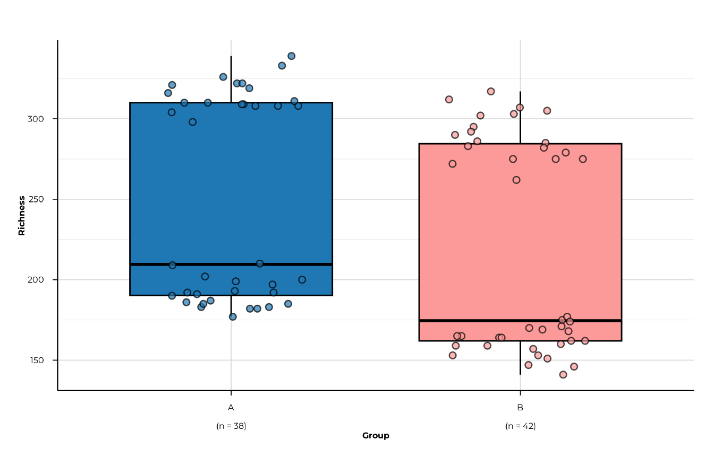
All five metrics
for (m in c("richness", "shannon_diversity", "simpson_diversity",
"pielou_evenness", "berger_parker_dominance")) {
print(plot_alpha(alpha_group, metric = m, group_col = "group"))
}
#> [09:26:12] INFO plotting alpha diversity (precomputed)
#> -> metric: richness
#> [09:26:12] OK plotting alpha diversity (precomputed) - done
#> -> elapsed: 0.097s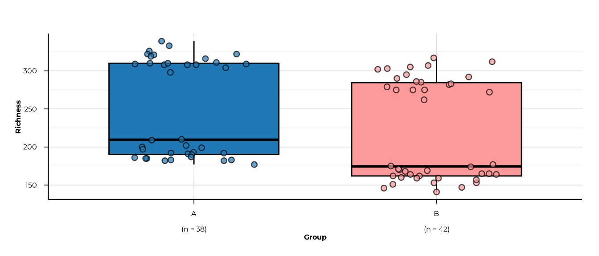
#> [09:26:12] INFO plotting alpha diversity (precomputed)
#> -> metric: shannon_diversity
#> [09:26:13] OK plotting alpha diversity (precomputed) - done
#> -> elapsed: 0.059s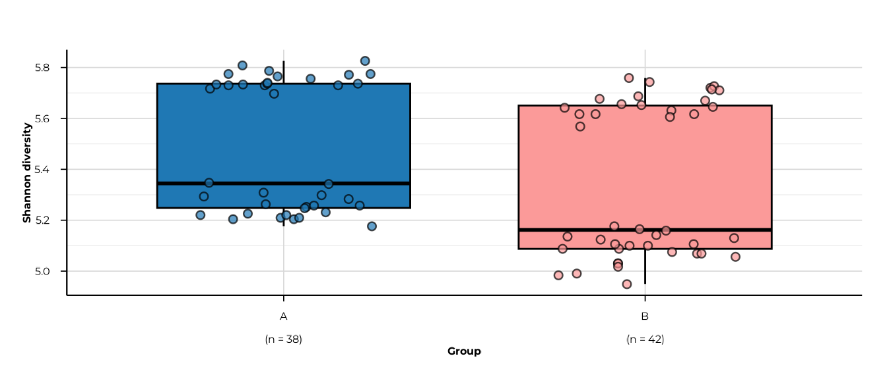
#> [09:26:13] INFO plotting alpha diversity (precomputed)
#> -> metric: simpson_diversity
#> [09:26:13] OK plotting alpha diversity (precomputed) - done
#> -> elapsed: 0.097s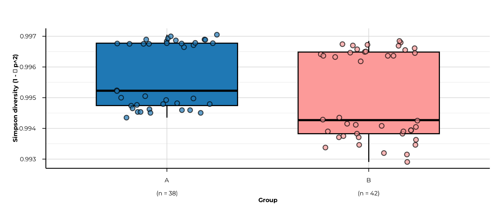
#> [09:26:13] INFO plotting alpha diversity (precomputed)
#> -> metric: pielou_evenness
#> [09:26:13] OK plotting alpha diversity (precomputed) - done
#> -> elapsed: 0.059s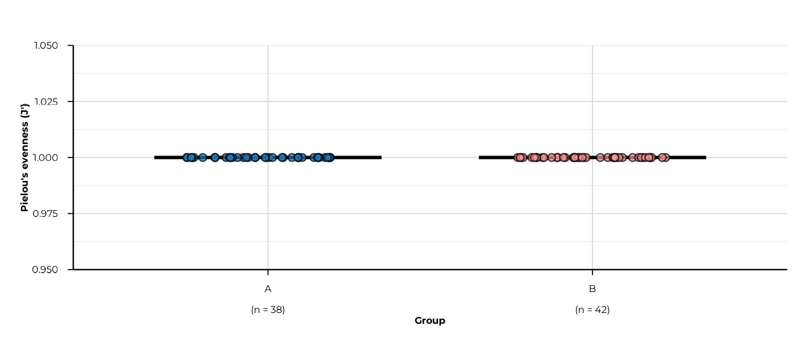
#> [09:26:13] INFO plotting alpha diversity (precomputed)
#> -> metric: berger_parker_dominance
#> [09:26:13] OK plotting alpha diversity (precomputed) - done
#> -> elapsed: 0.059s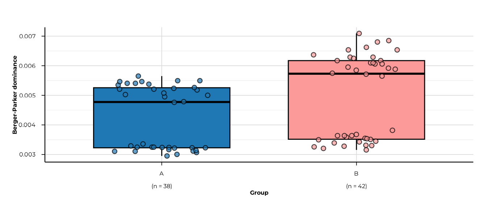
Faceting across multiple ranks
When diversity was computed at multiple ranks, set
facet_by_rank = TRUE (the default) to get one panel per
rank.
Note on this toy example. The peptides shipped with
load_example_data()are synthetic identifiers that do not map to any entry in the peptide library. As a result, all taxonomic rank columns (family,genus, …) are empty for every peptide, so richness at those ranks is 0 for all samples. In a real PhIP-seq experiment where peptides carry proper library annotations, each rank would show non-zero diversity reflecting the taxonomic breadth of each patient’s reactivity.
plot_alpha(
alpha_tax,
metric = "richness",
group_col = "group",
facet_by_rank = TRUE,
ncol = 3
)
#> [09:26:14] INFO plotting alpha diversity (precomputed)
#> -> metric: richness
#> [09:26:14] OK plotting alpha diversity (precomputed) - done
#> -> elapsed: 0.105s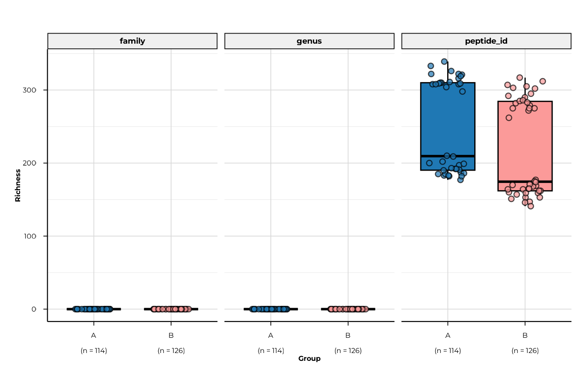
Disable faceting and restrict to a single rank with
filter_ranks.
plot_alpha(
alpha_tax,
metric = "richness",
group_col = "group",
filter_ranks = "peptide_id",
facet_by_rank = FALSE
)
#> [09:26:15] INFO plotting alpha diversity (precomputed)
#> -> metric: richness
#> [09:26:15] OK plotting alpha diversity (precomputed) - done
#> -> elapsed: 0.061sFiltering and ordering groups
Use filter_groups to keep a subset and
x_order to control axis order.
plot_alpha(
alpha_both$timepoint,
metric = "shannon_diversity",
group_col = "timepoint",
filter_groups = c("T1", "T2"),
x_order = c("T1", "T2"),
x_labels = c(T1 = "Baseline", T2 = "Follow-up")
)
#> [09:26:15] INFO plotting alpha diversity (precomputed)
#> -> metric: shannon_diversity
#> [09:26:15] OK plotting alpha diversity (precomputed) - done
#> -> elapsed: 0.062s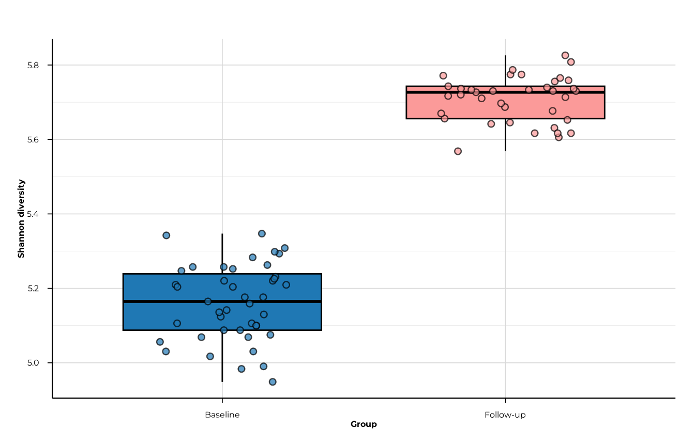
Customising appearance
Simpson diversity values in this dataset are tightly clustered near 1
(range 0.993–0.997). Setting y_range to the actual data
range rather than the theoretical c(0, 1) reveals the
within-group spread that would otherwise be invisible.
plot_alpha(
alpha_group,
metric = "simpson_diversity",
group_col = "group",
custom_colors = c(A = "#E41A1C", B = "#377EB8"),
y_range = c(0.99, 1),
x_tickangle = 30,
show_grids = FALSE,
point_size = 2.5,
point_alpha = 0.6
)
#> [09:26:16] INFO plotting alpha diversity (precomputed)
#> -> metric: simpson_diversity
#> [09:26:16] OK plotting alpha diversity (precomputed) - done
#> -> elapsed: 0.102s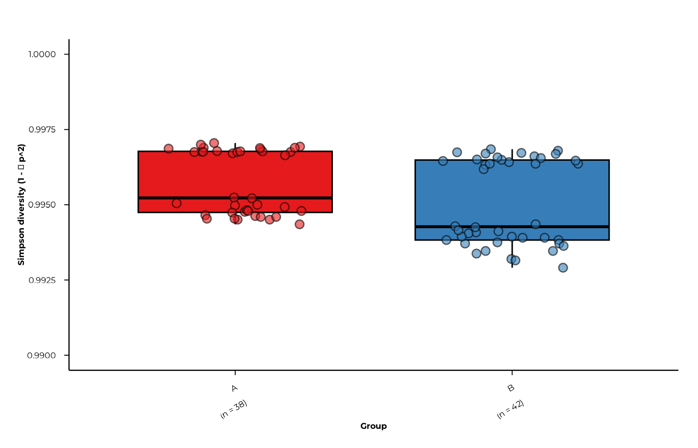
Plotting the interaction table
When group_interaction = TRUE, the interaction element
stores the combined label in a column called
phip_interaction.
plot_alpha(
alpha_inter,
metric = "richness",
group_col = "phip_interaction",
interaction_only = TRUE
)
#> [09:26:16] INFO plotting alpha diversity (precomputed)
#> -> metric: richness
#> [09:26:16] INFO selected interaction table
#> - group * timepoint
#> [09:26:16] OK plotting alpha diversity (precomputed) - done
#> -> elapsed: 0.101s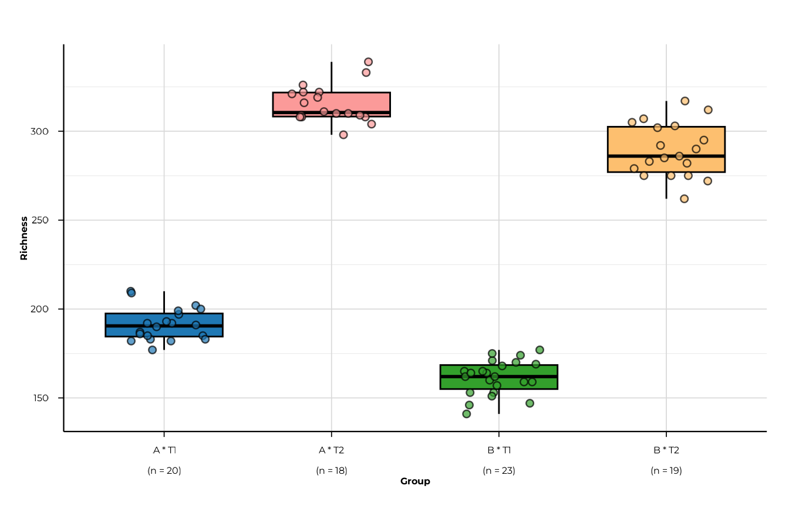
plot_alpha_interactive() — plotly
The interactive version mirrors the static API and returns a plotly widget, making it suitable for HTML reports and Shiny apps.
plot_alpha_interactive(
alpha_group,
metric = "richness",
group_col = "group"
)All display parameters — custom_colors,
x_order, y_range, filter_groups,
facet_by_rank — behave identically to the static
version.
Statistical testing
compute_alpha_significance() runs
global and pairwise hypothesis tests
on every (rank, metric) combination in the alpha diversity
result.
Default: Kruskal-Wallis + Wilcoxon
sig <- compute_alpha_significance(
alpha_group,
group_col = "group"
)
sig
#> $global
#> # A tibble: 5 × 5
#> rank metric statistic p_value test
#> <chr> <chr> <dbl> <dbl> <chr>
#> 1 peptide_id richness 14.2 0.000168 kruskal-wallis
#> 2 peptide_id shannon_diversity 14.2 0.000168 kruskal-wallis
#> 3 peptide_id simpson_diversity 14.2 0.000168 kruskal-wallis
#> 4 peptide_id pielou_evenness Inf 0 kruskal-wallis
#> 5 peptide_id berger_parker_dominance 14.2 0.000168 kruskal-wallis
#>
#> $pairwise
#> # A tibble: 5 × 9
#> rank metric group1 group2 p_raw p_adj cohens_d stars test
#> <chr> <chr> <chr> <chr> <dbl> <dbl> <dbl> <chr> <chr>
#> 1 peptide_id richness A B 1.71e-4 1.71e-4 0.475 *** wilc…
#> 2 peptide_id shannon_diversi… A B 1.71e-4 1.71e-4 0.511 *** wilc…
#> 3 peptide_id simpson_diversi… A B 1.71e-4 1.71e-4 0.563 *** wilc…
#> 4 peptide_id pielou_evenness A B 3.05e-2 3.05e-2 0 * wilc…
#> 5 peptide_id berger_parker_d… A B 1.71e-4 1.71e-4 -0.563 *** wilc…
#>
#> attr(,"class")
#> [1] "phip_alpha_significance"
#> attr(,"group_col")
#> [1] "group"
#> attr(,"global_test")
#> [1] "kruskal"
#> attr(,"pairwise_test")
#> [1] "wilcoxon"
#> attr(,"p_adjust_method")
#> [1] "BH"
#> attr(,"metrics")
#> [1] "richness" "shannon_diversity"
#> [3] "simpson_diversity" "pielou_evenness"
#> [5] "berger_parker_dominance"
#> attr(,"ranks")
#> [1] "peptide_id"The return value is a list of class
"phip_alpha_significance" with two tibbles.
Global test
One row per (rank, metric):
sig$global
#> # A tibble: 5 × 5
#> rank metric statistic p_value test
#> <chr> <chr> <dbl> <dbl> <chr>
#> 1 peptide_id richness 14.2 0.000168 kruskal-wallis
#> 2 peptide_id shannon_diversity 14.2 0.000168 kruskal-wallis
#> 3 peptide_id simpson_diversity 14.2 0.000168 kruskal-wallis
#> 4 peptide_id pielou_evenness Inf 0 kruskal-wallis
#> 5 peptide_id berger_parker_dominance 14.2 0.000168 kruskal-wallisPairwise comparisons
One row per (rank, metric, pair) with raw and adjusted
p-values, Cohen’s d, and significance stars:
sig$pairwise
#> # A tibble: 5 × 9
#> rank metric group1 group2 p_raw p_adj cohens_d stars test
#> <chr> <chr> <chr> <chr> <dbl> <dbl> <dbl> <chr> <chr>
#> 1 peptide_id richness A B 1.71e-4 1.71e-4 0.475 *** wilc…
#> 2 peptide_id shannon_diversi… A B 1.71e-4 1.71e-4 0.511 *** wilc…
#> 3 peptide_id simpson_diversi… A B 1.71e-4 1.71e-4 0.563 *** wilc…
#> 4 peptide_id pielou_evenness A B 3.05e-2 3.05e-2 0 * wilc…
#> 5 peptide_id berger_parker_d… A B 1.71e-4 1.71e-4 -0.563 *** wilc…Choosing the test
sig_anova <- compute_alpha_significance(
alpha_group,
group_col = "group",
global_test = "anova",
pairwise_test = "tukey"
)
sig_anova$global
#> # A tibble: 5 × 5
#> rank metric statistic p_value test
#> <chr> <chr> <dbl> <dbl> <chr>
#> 1 peptide_id richness 4.50 0.0370 anova
#> 2 peptide_id shannon_diversity 5.21 0.0252 anova
#> 3 peptide_id simpson_diversity 6.32 0.0140 anova
#> 4 peptide_id pielou_evenness 3.48 0.0657 anova
#> 5 peptide_id berger_parker_dominance 6.32 0.0140 anovap-value adjustment
Any method accepted by p.adjust() is supported:
sig_bonf <- compute_alpha_significance(
alpha_group,
group_col = "group",
p_adjust_method = "bonferroni"
)
sig_bonf$pairwise[, c("metric", "group1", "group2", "p_raw", "p_adj", "stars")]
#> # A tibble: 5 × 6
#> metric group1 group2 p_raw p_adj stars
#> <chr> <chr> <chr> <dbl> <dbl> <chr>
#> 1 richness A B 0.000171 0.000171 ***
#> 2 shannon_diversity A B 0.000171 0.000171 ***
#> 3 simpson_diversity A B 0.000171 0.000171 ***
#> 4 pielou_evenness A B 0.0305 0.0305 *
#> 5 berger_parker_dominance A B 0.000171 0.000171 ***Restricting to a subset of metrics
sig_rich <- compute_alpha_significance(
alpha_group,
group_col = "group",
metric = c("richness", "shannon_diversity")
)
sig_rich$global
#> # A tibble: 2 × 5
#> rank metric statistic p_value test
#> <chr> <chr> <dbl> <dbl> <chr>
#> 1 peptide_id richness 14.2 0.000168 kruskal-wallis
#> 2 peptide_id shannon_diversity 14.2 0.000168 kruskal-wallisMulti-rank significance
When alpha was computed at multiple ranks, significance is tested at every rank automatically:
sig_tax <- compute_alpha_significance(
alpha_tax,
group_col = "group",
metric = "richness"
)
dplyr::select(sig_tax$global, rank, metric, statistic, p_value)
#> # A tibble: 3 × 4
#> rank metric statistic p_value
#> <chr> <chr> <dbl> <dbl>
#> 1 peptide_id richness 14.2 0.000168
#> 2 family richness NaN NaN
#> 3 genus richness NaN NaNVisualising significance
plot_alpha_significance() offers two display modes.
Table mode
Returns the filtered pairwise tibble — useful for including in reports or further processing:
plot_alpha_significance(
sig,
metric = "richness",
type = "table",
p_threshold = 0.05
)
#> # A tibble: 1 × 9
#> rank metric group1 group2 p_raw p_adj cohens_d stars test
#> <chr> <chr> <chr> <chr> <dbl> <dbl> <dbl> <chr> <chr>
#> 1 peptide_id richness A B 0.000171 0.000171 0.475 *** wilcoxonSet p_threshold = 1 to retrieve all pairs regardless of
significance.
plot_alpha_significance(
sig,
metric = "richness",
type = "table",
p_threshold = 1
)
#> # A tibble: 1 × 9
#> rank metric group1 group2 p_raw p_adj cohens_d stars test
#> <chr> <chr> <chr> <chr> <dbl> <dbl> <dbl> <chr> <chr>
#> 1 peptide_id richness A B 0.000171 0.000171 0.475 *** wilcoxonHeatmap mode
Produces a Cohen’s d heatmap with significance stars overlaid. Non-significant pairs (p_adj > threshold) are shown in grey.
plot_alpha_significance(
sig,
metric = "richness",
type = "heatmap",
p_threshold = 1 # show all pairs; colour by effect size
)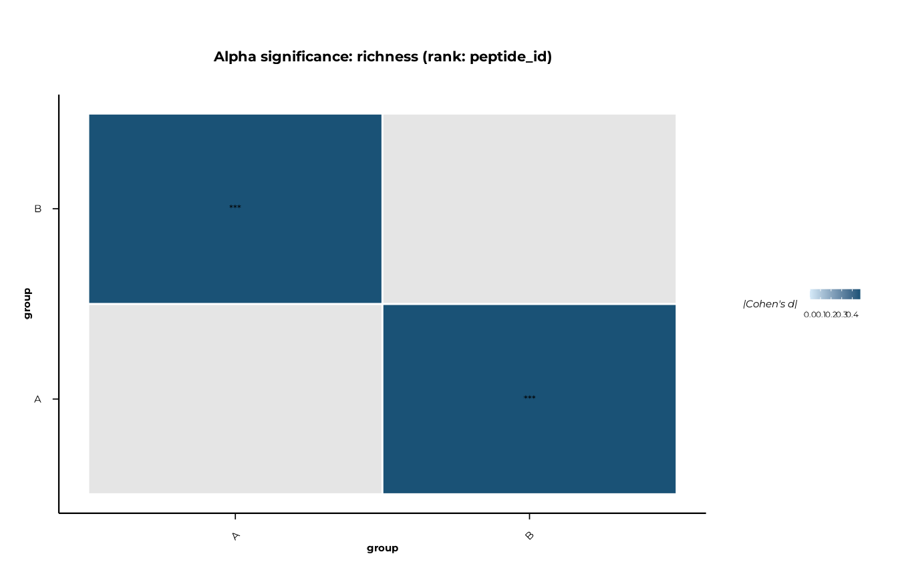
Heatmap across metrics
Loop over metrics to produce one heatmap per metric:
for (m in attr(sig, "metrics")) {
print(
plot_alpha_significance(sig, metric = m, type = "heatmap", p_threshold = 1)
)
}Significance brackets on boxplots
Pass a "phip_alpha_significance" object to
plot_alpha() via the significance argument,
and set show_significance = TRUE to overlay pairwise
brackets automatically. The ggsignif package must be
installed.
plot_alpha(
alpha_group,
metric = "richness",
group_col = "group",
significance = sig,
show_significance = TRUE,
sig_p_threshold = 0.05
)
#> [09:26:18] INFO plotting alpha diversity (precomputed)
#> -> metric: richness
#> [09:26:18] OK plotting alpha diversity (precomputed) - done
#> -> elapsed: 0.113s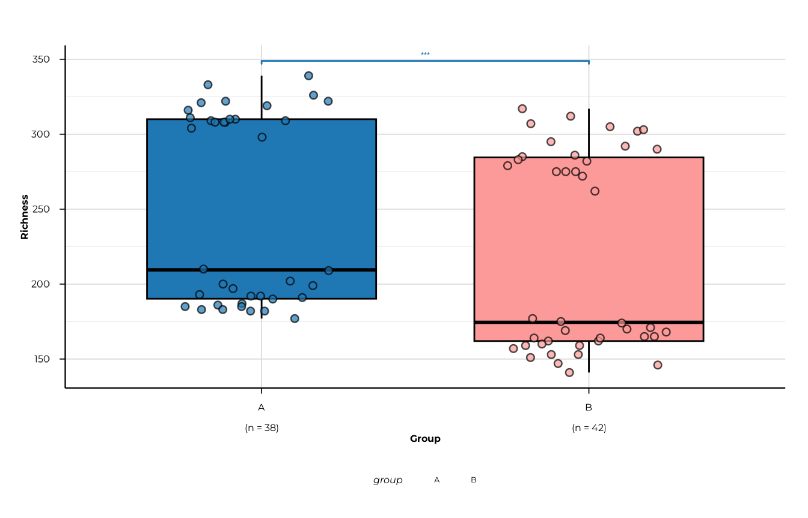
Tune the bracket geometry with sig_step_increase and
sig_tip_length:
plot_alpha(
alpha_group,
metric = "shannon_diversity",
group_col = "group",
significance = sig,
show_significance = TRUE,
sig_p_threshold = 0.1,
sig_step_increase = 0.08,
sig_tip_length = 0.005
)
#> [09:26:19] INFO plotting alpha diversity (precomputed)
#> -> metric: shannon_diversity
#> [09:26:19] OK plotting alpha diversity (precomputed) - done
#> -> elapsed: 0.109s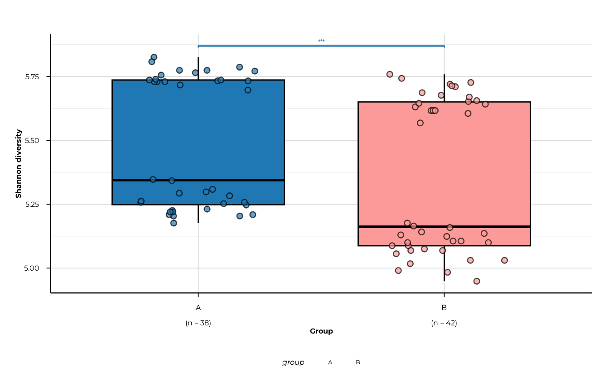
Putting it all together
A typical analysis runs in four steps:
# 1. Compute diversity at peptide and family level
alpha <- compute_alpha(
pd,
group_cols = c("group", "timepoint"),
ranks = c("peptide_id", "family"),
group_interaction = TRUE
)
# 2. Visualise
plot_alpha(alpha, metric = "richness", group_col = "group")
plot_alpha(alpha, metric = "pielou_evenness", group_col = "timepoint",
x_order = c("T1", "T2"),
x_labels = c(T1 = "Baseline", T2 = "Follow-up"))
# 3. Test
sig <- compute_alpha_significance(alpha, group_col = "group")
# 4. Report
sig$global
plot_alpha_significance(sig, type = "heatmap", p_threshold = 1)
plot_alpha(alpha, metric = "richness", group_col = "group",
significance = sig, show_significance = TRUE)Session info
sessionInfo()
#> R version 4.6.0 (2026-04-24)
#> Platform: x86_64-pc-linux-gnu
#> Running under: Ubuntu 24.04.4 LTS
#>
#> Matrix products: default
#> BLAS: /usr/lib/x86_64-linux-gnu/openblas-pthread/libblas.so.3
#> LAPACK: /usr/lib/x86_64-linux-gnu/openblas-pthread/libopenblasp-r0.3.26.so; LAPACK version 3.12.0
#>
#> locale:
#> [1] LC_CTYPE=C.UTF-8 LC_NUMERIC=C LC_TIME=C.UTF-8
#> [4] LC_COLLATE=C.UTF-8 LC_MONETARY=C.UTF-8 LC_MESSAGES=C.UTF-8
#> [7] LC_PAPER=C.UTF-8 LC_NAME=C LC_ADDRESS=C
#> [10] LC_TELEPHONE=C LC_MEASUREMENT=C.UTF-8 LC_IDENTIFICATION=C
#>
#> time zone: UTC
#> tzcode source: system (glibc)
#>
#> attached base packages:
#> [1] stats graphics grDevices utils datasets methods base
#>
#> other attached packages:
#> [1] phiper_0.4.1
#>
#> loaded via a namespace (and not attached):
#> [1] tidyr_1.3.2 utf8_1.2.6 sass_0.4.10
#> [4] generics_0.1.4 digest_0.6.39 magrittr_2.0.5
#> [7] evaluate_1.0.5 grid_4.6.0 RColorBrewer_1.1-3
#> [10] sysfonts_0.8.9 showtextdb_3.0 blob_1.3.0
#> [13] fastmap_1.2.0 jsonlite_2.0.0 DBI_1.3.0
#> [16] purrr_1.2.2 scales_1.4.0 textshaping_1.0.5
#> [19] jquerylib_0.1.4 duckdb_1.5.2 cli_3.6.6
#> [22] rlang_1.2.0 chk_0.10.0 dbplyr_2.5.2
#> [25] phiperio_0.5.0 withr_3.0.2 cachem_1.1.0
#> [28] yaml_2.3.12 otel_0.2.0 tools_4.6.0
#> [31] ggsignif_0.6.4 dplyr_1.2.1 ggplot2_4.0.3
#> [34] showtext_0.9-8 vctrs_0.7.3 R6_2.6.1
#> [37] lifecycle_1.0.5 fs_2.1.0 htmlwidgets_1.6.4
#> [40] ragg_1.5.2 pkgconfig_2.0.3 desc_1.4.3
#> [43] pkgdown_2.2.0 RcppParallel_5.1.11-2 pillar_1.11.1
#> [46] bslib_0.11.0 gtable_0.3.6 glue_1.8.1
#> [49] Rcpp_1.1.1-1.1 systemfonts_1.3.2 xfun_0.57
#> [52] tibble_3.3.1 tidyselect_1.2.1 knitr_1.51
#> [55] farver_2.1.2 htmltools_0.5.9 labeling_0.4.3
#> [58] rmarkdown_2.31 compiler_4.6.0 S7_0.2.2